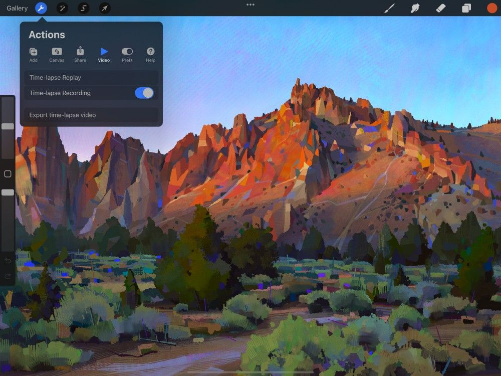
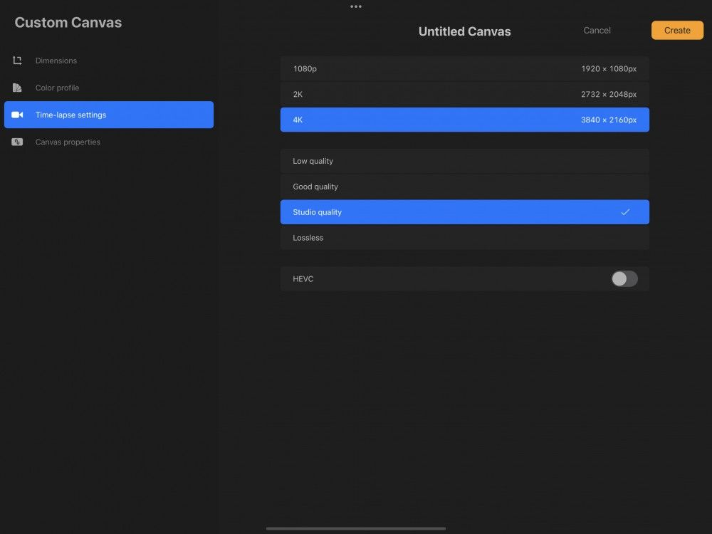
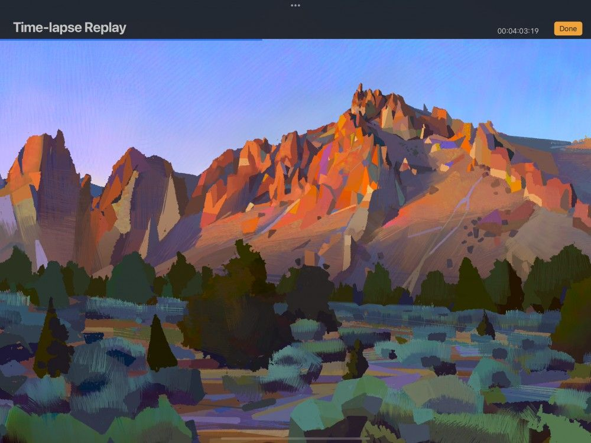
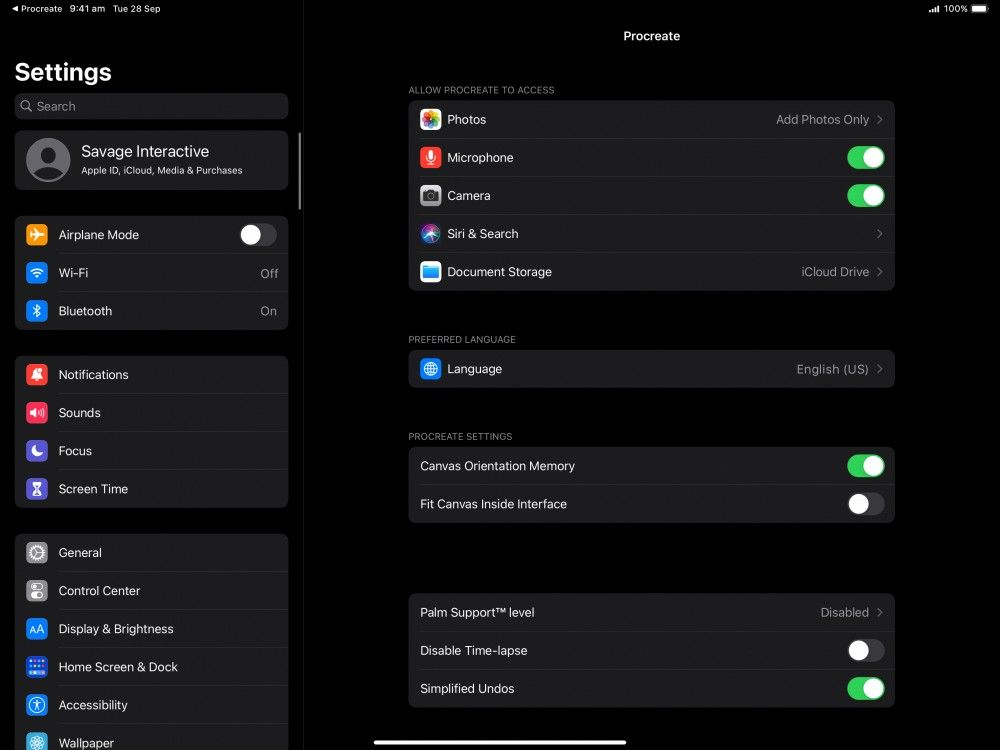

📖 Đã dịch sang tiếng Việt. Thuật ngữ chuyên môn giữ tiếng Anh — rê chuột để xem nghĩa (tooltip).
Video
Quay quá trình sáng tạo của bạn thành video Time-lapse (tua nhanh thời gian), và chia sẻ với mọi người.
Create Time-lapse Video (tạo video tua nhanh thời gian)
Video Time-lapse ghi lại từng bước tạo ra ảnh. Sau đó nó tổng hợp thành video phát lại tốc độ cao mà bạn có thể xuất và chia sẻ.

Video Time-lapse được bật mặc định khi bạn tạo khung vẽ mới. Nó sẽ ghi lại tiến độ ở độ phân giải 1080p với cài đặt Good Quality.
Các cài đặt này không thể thay đổi giữa chừng dự án, nhưng có thể điều chỉnh trước khi bạn bắt đầu.

Custom Settings (cài đặt tùy chỉnh)
Tạo khung vẽ tùy chỉnh để tinh chỉnh video Time-lapse.
Từ Gallery, chạm nút + ở góc trên bên phải màn hình. Thao tác này sẽ mở menu New Canvas. Ở góc trên bên phải của menu đó có một biểu tượng gồm hai hình chữ nhật với ký hiệu + nhỏ. Chạm vào để mở màn hình Custom Canvas. Chạm Time-lapse settings.
Từ đây, bạn có thể tinh chỉnh Time-lapse Settings cho Canvas mới. Chọn độ phân giải video từ 1080p đến 4K đầy đủ. Tinh chỉnh cài đặt chất lượng ghi từ Low (tệp nhỏ, tốt để chia sẻ) đến Lossless (tệp lớn, không mất chi tiết).
HEVC là một hình thức nén video để tạo đồ họa chuyển động nâng cao. Nó tắt theo mặc định.
Khi đã hài lòng với cài đặt Time-lapse, hãy chạm Create.
Phát, Tạm dừng và Chia sẻ video Time-lapse
Xem và điều khiển video Time-Lapse bất cứ lúc nào.


Replay
Xem trước video Time-lapse mà không cần thoát Procreate.
Chạm Actions → Video → Time-lapse Replay.
Thao tác này phát video trong Procreate theo vòng lặp, ở tốc độ 30 khung hình/giây. Một bộ đếm ở góc trên bên phải màn hình hiển thị thời lượng video.
Để tua lui và tới trong bản phát lại, hãy kéo ngón tay sang trái và phải trên khung vẽ.
Bạn có thể pinch-zoom và di chuyển trên khung vẽ như bình thường trong khi video phát. Điều này cho phép bạn tập trung vào các chi tiết.
Để thoát bản phát lại và quay lại tác phẩm, chạm Done.
Pause
Tạm dừng bản ghi để tạo video Time-lapse đã chỉnh sửa.
Bạn có thể dừng và bắt đầu bản ghi Time-lapse bất cứ lúc nào.
Chạm Actions → Video, và tắt Time-lapse Recording.
Procreate sau đó hỏi bạn có muốn xóa video hiện có hay không. Nếu chọn Purge, toàn bộ video đã ghi trên khung vẽ này cho đến nay sẽ bị xóa. Thao tác này không thể hoàn tác.
Nếu bạn chỉ muốn tạm dừng bản ghi, hãy chạm Don't Purge. Việc tạm dừng cho phép bạn cắt bỏ những phần trong quá trình mà bạn không muốn hiển thị. Điều này có thể tạo ra video ngắn hơn và dễ chia sẻ hơn.
Để tiếp tục ghi, hãy bật lại Time-lapse Recording.
Export
Chia sẻ video Time-lapse của bạn với mọi người.
Chia sẻ bản ghi Time-lapse là cách tuyệt vời để cho người khác xem kỹ thuật của bạn.
Chạm Actions → Video → Export Time-lapse video.
Chọn giữa Full length và 30 Seconds.
Full-length xuất toàn bộ quá trình của bạn thành video tốc độ cao. Video này sẽ bao quát toàn bộ quá trình và có độ dài thay đổi.
30 Seconds rút gọn video xuống ba mươi giây bằng cách loại bỏ các khung hình để tăng tốc độ. Quá trình này dùng thuật toán bảo toàn những khung hình quan trọng nhất trong video. Nhiều khung hình nhất thường được giữ lại ở giai đoạn đầu tạo tác phẩm, khi chi tiết vẫn đang thay đổi nhanh.
Bạn có thể xuất video sang bất kỳ dịch vụ hay ứng dụng nào kết nối với giao diện iOS Files.
Pro Tip
Sharing process videos is a great way to get people interested in your art. Download a video editing app on the iPad to recut and combine various Time-lapse videos with music to create a moving portfolio.
Chèn Private Layer vào video Time-Lapse
Chèn Tệp hoặc Ảnh dưới dạng Private Layer sẽ không xuất hiện trong video Time-lapse.
Private Layer lý tưởng để che giấu ảnh tham chiếu và nội dung khác không thuộc phần của tác phẩm hoàn chỉnh. Bạn có thể làm việc này mà không cần phải xóa hay tắt private layer trong tệp. Một Private Layer hoạt động giống như lớp thông thường ở mọi khía cạnh, ngoại trừ việc nó sẽ không xuất hiện trong video Time-lapse đã xuất.
Tìm hiểu thêm về Private Layer ở phần Actions / Add.
Disable Time-lapse Video (tắt video tua nhanh thời gian)
Tắt hoàn toàn việc ghi.

Video Time-lapse bật theo mặc định. Tắt Time-lapse Recording trong Actions sẽ tạm dừng bản ghi của tác phẩm hiện tại. Nó sẽ không ảnh hưởng đến cài đặt bản ghi Time-lapse của các tác phẩm khác.
Để tắt bản ghi trên tất cả tác phẩm, chạm Help → Advanced Settings. Thao tác này thoát khỏi Procreate và vào iPad Settings → menu Procreate. Bật công tắc Disable Time-lapse để ngừng ghi Time-lapse trên các tác phẩm hiện có hoặc mới. Các bản ghi Time-lapse trước đó sẽ được giữ lại.
Time-lapse sẽ duy trì trạng thái tắt cho đến khi bạn bật lại trong cài đặt iPad. Bản ghi video Time-lapse sẽ tiếp tục từ thời điểm đó trở đi. Video sẽ không bao gồm bất kỳ phần vẽ hay nét nào bạn đã làm khi nó đang tắt — điều đó không thể khôi phục.
Still have questions?
If you didn't find what you're looking for, explore our video resources on YouTube or contact us directly. We’re always happy to help.